Next week during the class period, you'll take the CS 170 Midterm Exam. Both of the CS 170 exams consist of two parts, a 75 or 100-question, closed-notes, closed book short-answer, multiple-choice exam, (with questions similar to those you've seen on the quizzes), and a practical programming exam.
This online lesson will show you how to download and set
up a practice programming exam that is similar to the
programming exam you'll need to complete for the Midterm.
The Midterm Programming Exam will ask you to write five methods:
- one involving boolean expressions
- one involving simple loops
- one involving more complex logic problems
- one involving more complex loops
- one involving arrays and loops
These problems are similar to those you've been doing on JavaBat, but during the Midterm, you'll complete them using Eclipse and they'll be graded using Web-Cat. Since you have about an hour and a half to complete the programming portion of the exam, you'll want to follow the instructions in this lecture to get started, and then time yourself to see how you've done. Practicing under test conditions will really help you when it comes to the day of the test.
Below the link for these instructions on the Unit 6 Start Page, you'll find a screen-cast solution "key" to each of the problems, along with some helpful hints. Once you've finished taking the practice exam, make sure you watch the screen-cast to double-check your work.
Ready? Let's get started.
Getting Started
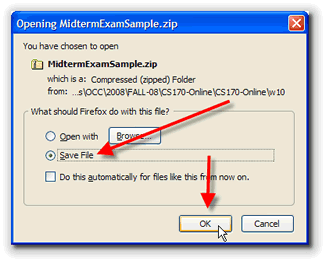
Get started by downloading and opening the sample exam. The practice exam is stored as a zip file, but you don't need any "unzipping" software to open in. Instead, you'll use Eclipse to open it as a project, just like we've done in class.To get the starter file, just click the link named MidtermExamSample.zip in this sentence. (There's also a link on the Unit 6 Start Page, just below the link for this lesson.) Instead of opening the file, choose Save as shown to the right.
Depending on
how your browser is set up, you may, or may not be given
an option as to where to save the file. If you're given a
choice, then save it in your cs170home folder, like this.
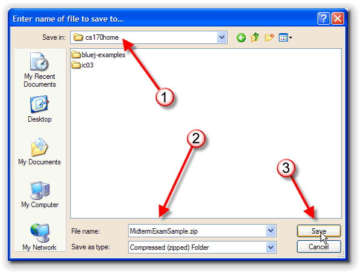
If, on the other hand, your browser saves the file on your desktop automatically, then you'll need to drag it into your cs170 folder before you go to the next step. Make sure that you don't put it in the folder containing your Eclipse workspace, since you'll need to use Eclipse to import the project into that workspace.Importing
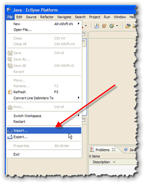
To open the exam, first, switch to your normal workspace, (in this class, that's probably cs170-workspace). Then, choose Import from the Eclipse File menu as shown in the picture on the right.When the Import Select dialog box appears as shown here:
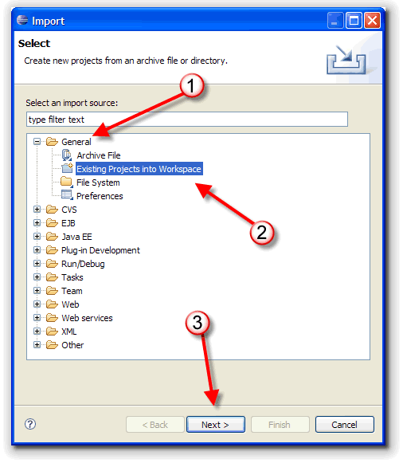
- expand the General folder as shown at (1)
- select Existing Projects into Workspace in the sub-list at (2)
- and then, click the Next button at (3)
When the Import Projects dialog appears you should
click the radio button that says Select Archive File
and then click the Browse button appearing to its right.
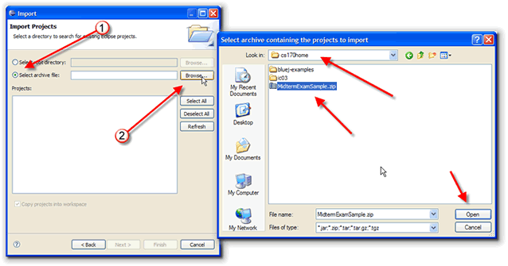
Browse to the location where you saved the MidtermExamSample.zip file (cs170home in my case), select it, and click the Open button. When the Import Projects dialog reappears for the second
time, it will have the archive file name selected (at 1), and the
MidtermExamSample project checked in the center section of the
screen (marked 2 in my snapshot here). This is the project that
will be imported.
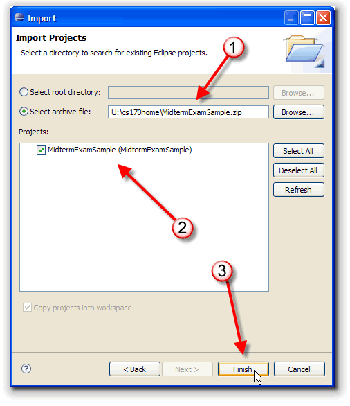
When you've got everything looking like this, click Finish, and the Sample Midterm project will be imported into your workspace.
Exam Structure
When Eclipse imports your project into the workspace, you need
to expand the default package (shown as number 1 below)
and then double-click the source-code file that it contains to
open the program in the editor.
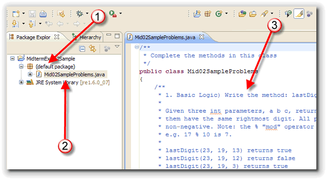
All of the problems are contained in a single class. For each problem I've provided:- a brief description including the name.
- a few sample results that you can use to test your code. The actual Web-cat tests are much more extensive.
- the JavaDoc for each of the parameters and for the returned value.
Writing the Code
Underneath the documentation for each of the problems,
you'll write the requested method. In this case, you'd
write a method named lastDigit() that returns
true or false and that has
three int parameters:
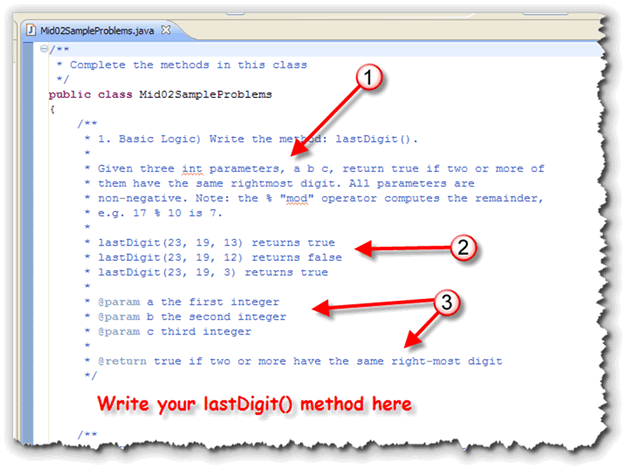
You can submit your exam to Web-Cat as often as you like; there is no limit like there is with homework assignments. However, you'll probably want to write your own tests in therun() method to make sure your code at least
meets the requirements for the example output I've listed.
Inside the run() method, you can use
out.println() to call your functions and
print the results in the system console. Do not use the
regular ACM println() methods, since this
is not and ACM console program.
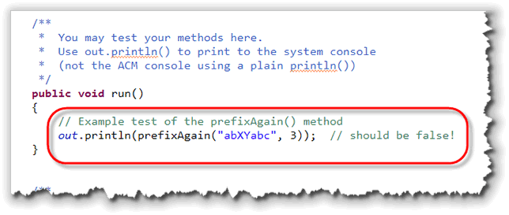
In the example shown here, I'm calling theprefixAgain() method, and I'll compare the results
that are printed to the results listed in the problem statement
documentation.
Do NOT DO ANY PRINTING inside your functions. Each function will return a value; that is what will be tested.
The Web-Cat Submitter
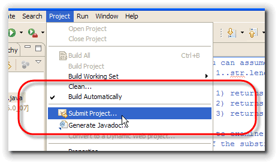
To submit your exam for grading you'll use Web-Cat. You can use the Web interface, like we've done for each of your homework assignments.However, Eclipse comes with a submitter extension that lets you submit your assignments from within the IDE. If you are using the CS 170 workspace this should already be set up and ready to go.
To use the submitter to turn in your exam:
- On the Project menu, choose Submit Project.
- When the Electronic Submission dialog appears, select the MID-SAMPLE project. (On my picture, the project is named MT-02-X from a previous semeester).
- Then, enter your Web-CAT ID and password for number 2.
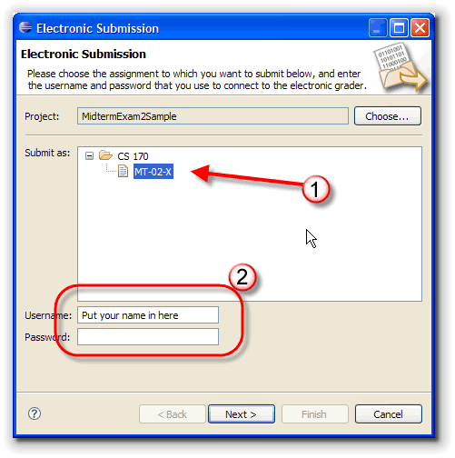
Click the Next button when you've done that.
Results
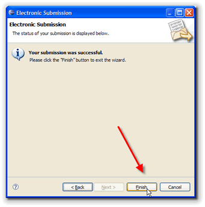
If you typed your Web-cat username and password correctly, you'll see a Success dialog that looks like this.
Click the Finish button and your Web-Cat page will open
up in Eclipse and you can check your result. As you can see from
the example here, I've just gotten started on solving the
problems in the exam:
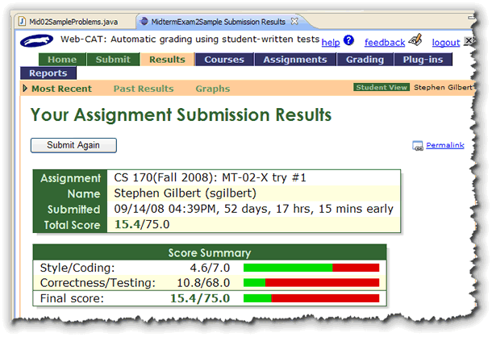
Now, before I go ahead and walk through the solution, why don't you close this lesson and try taking the exam yourself. Minimize distractions and limit yourself to an hour and a half. When you're done, check your work against the screen-cast solution posted underneath this lesson.
Coming Up ...
That's it for this unit. Make sure you finish taking the Unit 6 quiz and head on over to the Exercises page for the assignments this week. See you at the Midterm.